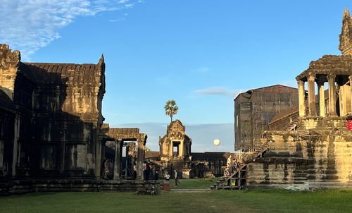

Le Cambodge
Je suis arrivée à la capitale, Phnom Penh, que j’ai longuement explorée. J’ai ensuite traversé le pays en bus jusqu’à Siem Reap pour découvrir les temples d’Angkor.
Je me suis levée avant l’aube pour admirer le lever du soleil sur Angkor Wat, entourée de singes et d’une atmosphère presque irréelle.
Dans ce pays, ce sont les habitant qui m'ont le plus marquée : une population profondément altruiste, bienveillante et accueillante, malgré des conditions de vie souvent difficiles. Voir de nos propres yeux des conditions de vie si éloignées des nôtres nous fait réaliser les privilèges que l'on a, dont on ne se rendait même pas forcément compte.
|  |